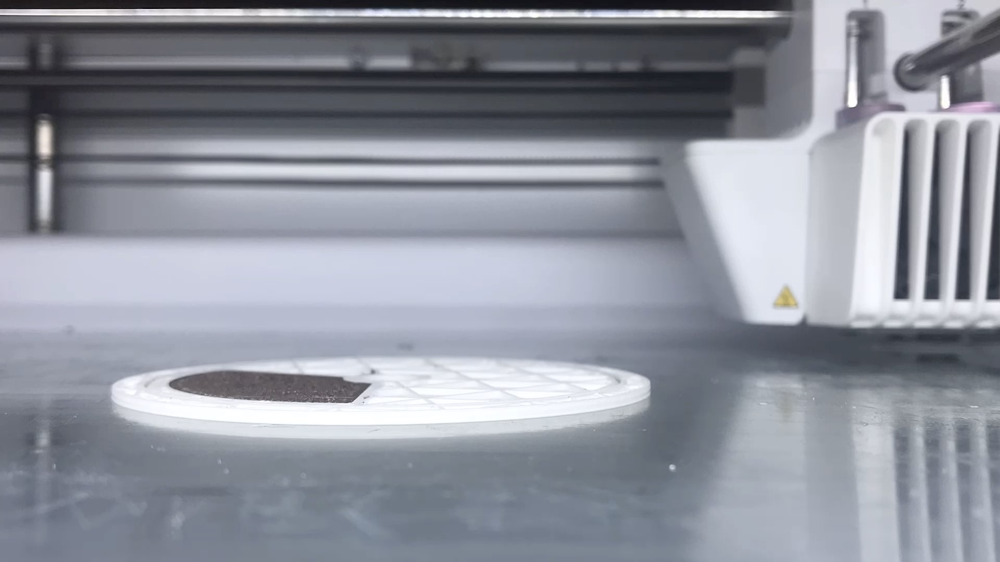
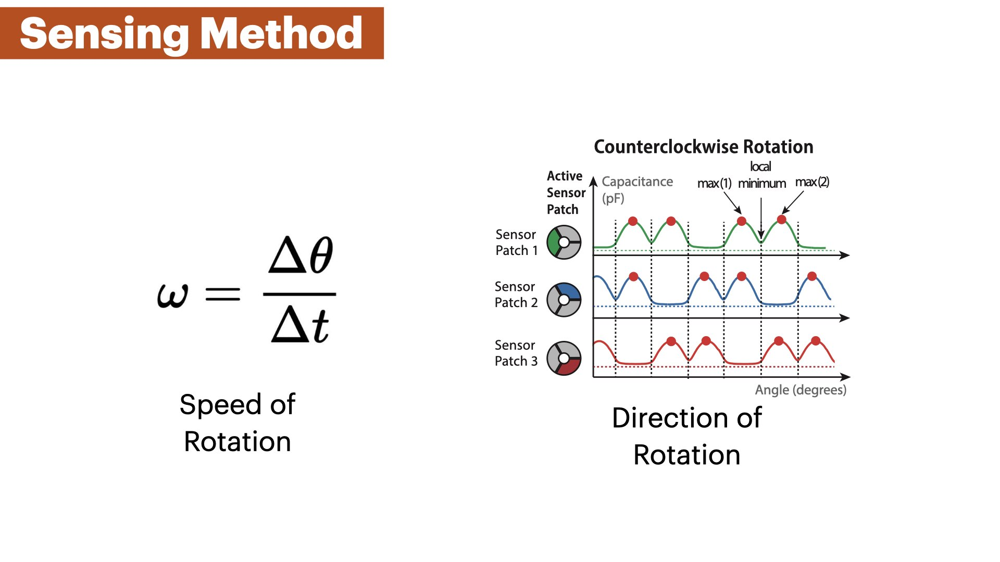
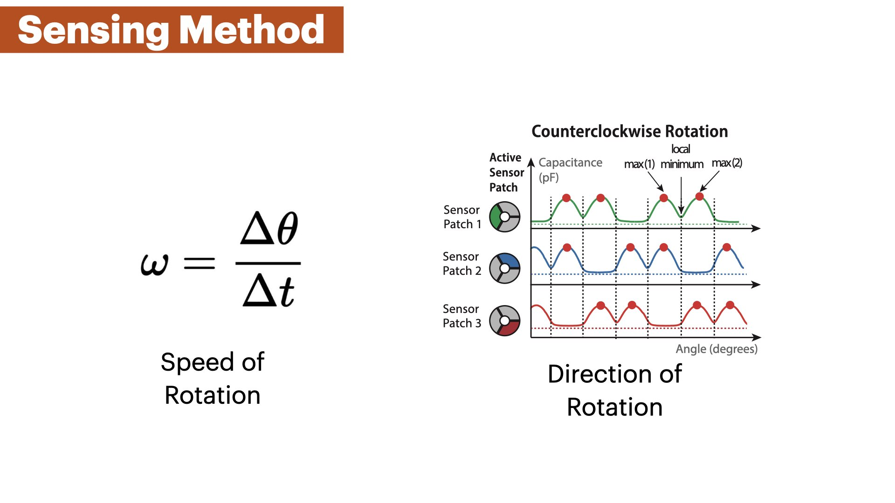

Publication
Marwa AlAlawi, Noah Pacik-Nelson, Junyi Zhu , Ben Greenspan, Andrew Doan, Brandon Wong, Benjamin Owen-Block, Shanti Mickens, Wilhelm Schoeman, Michael Wessely , Andreea Danielescu, Stefanie Mueller.
MechSense: A Design and Fabrication Pipeline for Integrating Rotary Encoders into 3D Printed Mechanisms
In Proceedings of CHI'23.
DOI PDF Video Slides Open Source
Video
CHI Presentation Video
Slides



 



Press
MechSense: A Design and Fabrication Pipeline for Integrating Rotary Encoders into 3D Printed Mechanisms
We introduce MechSense, 3D-printed rotary encoders that can be fabricated in one pass alongside rotational mechanisms, and report on their angular position, direction of rotation, and speed. Mech- Sense encoders utilize capacitive sensing by integrating a floating capacitor into the rotating element and three capacitive sensor patches in the stationary part of the mechanism. Unlike existing rotary encoders, MechSense does not require manual assembly but can be seamlessly integrated during design and fabrication. Our MechSense editor allows users to integrate the encoder with a ro- tating mechanism and exports files for 3D-printing. We contribute a sensor topology and a computational model that can compensate for print deviations. Our technical evaluation shows that MechSense can detect the angular position (mean error: 1.4°) across multiple prints and rotations, different spacing between sensor patches, and different sizes of sensors. We demonstrate MechSense through three application examples on 3D-printed tools, tangible UIs, and gear- boxes.
INTRODUCTION
Advances in 3D printing over the last decades have enabled increasingly complex 3D printed objects, including objects with moving parts that contain mechanisms, such as gears, linkages, and wheels (Grafter). While early 3D printed mechanisms were fully passive, researchers have started exploring how to augment 3D printed mechanisms with sensors to enable interactive applications. To sense the motion of these 3D printed mechanisms, researchers traditionally used external sensors. For instance, researchers have used acoustic sensing via external microphones ( Lamello ) or used hall effect sensors and magnets ( MechaMagnets ) to determine the interaction with 3D printed objects. Using external sensors, however, requires additional assembly, it can be difficult to augment mechanisms in the interior of a design, and many off-the- shelf sensors require to distribute wires throughout the 3D print as conductive filament often has a too high resistance, especially for larger prints.
Recently, the advent of multi-material 3D printing with conductive filament has enabled the integration of sensors with 3D printed geometries. For instance, researchers have shown how to print capacitive sensors from conductive filament to integrate touch sensors ( Capricate ) and deformation sensors ( MetaSense ) with 3D printed object geometries. Thus, a variety of different sensors can now be 3D printed together with the object geometry in one pass, facilitating the creation of interactive objects.
For rotational mechanisms, such as gears, linkages, and wheels, however, no sensor design has been proposed yet that can be 3D printed in one pass. To sense direction of rotation, speed, and angular position of rotational mechanisms, existing encoder designs require additional manual assembly. For instance, SteelSense enables high-resolution sensing of rotational elements , but requires metal casting of the sensing elements that afterwards have to be manually integrated into a 3D printed casing. Similarly, Karali et al. demonstrate a capacitive rotation sensor that utilizes two patterned copper plates that change their capacitance depending on the relative angle to each other. However, the copper plates cannot be 3D printed together with the object geometry, and thus, require manual assembly.
In this paper, we introduce MechSense, a fabrication pipeline based on conductive multi-material 3D printing that can print the geometry of the mechanisms and sensors together in one pass without the need to assemble the conductive and non-conductive parts. We focus on rotating mechanisms and develop a sensor layout that utilizes tracking of a floating capacitor which can augment various rotational mechanisms with the ability to sense their direction of rotation, speed, and angular position (Figure 1). To better understand user’s familiarity with multi-material 3D-printing and to identify the design software they most commonly use, we conducted a survey of 20 hardware design professionals. Based on the survey results and the overall popularity of SolidWorks in industry, we built a 3D editor add-on for SolidWorks that automatically integrates the sensor layout into the mechanism’s geometry and exports files for 3D printing. In our technical evaluation, we determine the angular position estimation error for sensors with different spacing between them, the effect of the sensor patch size, and the impact of the proximity of the user’s hand near the MechSense encoder. We demonstrate its usefulness with three application examples for tangible user interfaces, construction tools, and gearboxes.
In summary, we contribute:
- a sensor layout based on a floating capacitor that can be integrated with 3D printable rotational mechanisms to determine their direction of rotation, speed, and angular position (mean error: 1.4°)
- a 3D editor extension that automatically integrates sensors into mechanical components and generates the files for 3D printing
- a Java/Processing tool that converts the raw sensor data into angular position, direction of rotation, and speed 1
- a technical evaluation of the angular position accuracy for different spacing between sensors, the effect of the sensor patch size, and the influence of a user’s hand in proximity to the capacitive sensor
- four applications that demonstrate sensing integrated with various rotational mechanisms for tangible user interfaces, construction tools, and gearboxes
SENSOR LAYOUT
We developed a capacitive sensor design that incorporates a floating capacitor into the rotating component, such as the gear, and three sensor patches arranged in a circle around the static component, such as a shaft or a base plate (Figure 2) that can be fully 3D printed in one pass. Using capacitive sensing with this geometry eliminates the need for direct contact to the sensor patch in the moving com- ponent of the mechanism, thus allowing the moving component to rotate freely, providing a consistent sensor signal.The sensor patches on static part of the mechanism are conected to a capacitance sensing board (FDC2214 Sensor Board). The floating capacitor is integrated into the moving part of the mecha- nism and is not wired to the circuitry. Instead, the floating capacitor creates a coupled capacitance system between neighboring sensing patches. The amount of overlap between the floating capacitor and the sensor patches impacts the capacitance of the system, which we utilize to determine the location of the floating capacitor. This enables us to track the moving part of the mechanism while it is freely rotating.
SENSOR SIGNAL PROPERTIES
Figure 3. Signal profile of one sensor patch when the floating capacitor overlaps by different amounts and corresponding angular positions. We observe maxima and minima of the sensor signal at distinct positions of the floating capacitor.
Figure 3 shows the signal of one sensor patch while the floating capacitor is rotating by 360°. We observe four different features in the signal: (1) a global minimum, (2+3) two maxima, and (4) a local minimum.
- Global Minimum (No Overlap) : When the floating capacitor and the active sensor patch have no overlap, we observe a global minimum in the signal (Figure 3 at 300° - 60°). The reason for this is that the floating capacitor is not coupled with the sensor patch and thus the detected capacitance is lower than in the other states.
- Maxima #1 and #2 (Half Overlap) : When the floating capacitor evenly overlaps with the active sensor patch and one of the neighboring patches, we observe two maxima at 120° and 240° (Figure 3). Since the neighboring patches are grounded by being connected to the sensing board, the coupled capacitance of the system is maximal in these positions. Although the shape of the sensing patches is identical, differences in print quality create different conductivity across patches which results in different peaks for each sensor.
- Local Minimum (Full Overlap) : When the floating capacitor and the active sensor patch are aligned, we observe a local minimum. The reason for this is that the floating capacitor has no overlap with the neighboring patches but is still in close proximity to them, leading to a small but measurable coupled capacitance (Figure 3 at 180°) that is still higher than the global minimum where the floating capacitor has no overlap with the sensing patch (Figure 3 at 360°).
SENSOR SIGNAL PROPERTIES
Our goal is to derive the angular position from the capacitance values that we read from each of the sensor patches while the floating capacitor is rotating over them. To do that, we proceed with the following steps: (1) We preprocess the sensor data with a low-pass filter to reduce noise; (2) We determine the capacitance values of each extremum in the signal (e.g., the local minimum); (3) We divide the signal into 5 segments with each segment located between two extrema (Figure 4 a); (4) We normalize the segments that are not in the global minimum and fit a polynomial to the sensor values that approximates the signal within each segment (Figure 4 b). We can compute the angular position of the rotating element by determining the current signal segment it is in and estimating the current angle using the polynomial of this segment; and (5) we estimate the angle across all 3 sensor patches and calculate the average of all estimates. Since the sensor signal is constant in the global minimum across 120°(i.e., the floating capacitor has no overlap with the sensor patch), we cannot derive any angle in this region. Thus, we designed the sensor to contain 3 sensor patches such that the floating capacitor in the moving element always overlaps with at least one sensor patch at all times. If more than one sensor patch is not in the global minimum and outputs an angle estimate, we average between multiple sensor patch estimates.

Preprocessing of Raw Sensor Data
The raw sensor data contains noise that leads to the occurrence of multiple false local extrema. Hence, we apply a moving average filter to smooth the data. We chose a window size of 8 that is large enough to obtain a smooth signal but is also small enough to preserve the magnitude of the extrema.
Figure 5. Smoothing sensor data. We apply a moving average filter (windows size = 8) to the raw sensor data to attenuate local fluctuations.
Detecting Extrema in the Sensor Signal
The key features for our angle estimation algorithm are the minima and maxima in the sensor signal over a full rotation. We find these extrema during an initial calibration step which has to be done once before using the sensor (Section 4.4). In this calibration step, we fully rotate the mechanism 3 times and use a peak detection method to identify the extrema. After storing the sensor values for these extrema, we use them for detecting extrema in live data by thresholding all incoming sensor values for these extrema points. We also take into account that the rotating element cannot randomly jump from one angular position to another, i.e. if the rotating element just passed through the local minimum, the next possible extremum can only be the maximum #2 if rotating clockwise (Figure 4 a). Thus, we keep track of our last visited extrema and threshold only for the next possible extremum.
Segmenting the Sensor Signal:
We divide the sensor signal into 5 segments where 4 segments are between two neighboring extrema of the signal and the fifth segment lies within the global mininum (Figure 4 a). Within each segment, the sensor signal is strictly monotonically increasing or decreasing which means that for a specific sensing value there is only one possible angle position. We segment the sensor signal because one sensing value can have multiple possible angle positions throughout the entire signal.
Fitting a Polynomial to Each Segment:
Our goal is to derive a function that approximates all sensing values per segment and outputs an angular position for a sensor reading. To do that, we first ran an experiment by rotating a gear with an integrated MechSense encoder 50 times and captured the generated sensor data (3mm patch distance, 765mm2 sensor patch size, 10 RPM, Figure 19). We then segmented and normalized the sensor data as described above (Figure 4 b). We fitted the data to several approximation functions including polynomials of degrees 3, 4, and 5 and a Fourier function. While all functions showed very similar approximation errors (<0.1°difference), we found that a 4th degree polynomial shows the least amount of error. Thus, we fitted a 4th degree polynomial to each of the 4 segments (that are not the constant global minimum), i.e. we generated 200 polynomials (50 rotations x 4 segments). Finally, we averaged the coefficients across all 200 polynomials. The resulting polynomial of the form f(x) = ax4 + bx3 + cx2 + dx + e has the coefficients a = 1.74*10− 7, b = −2.86*10− 5, c = 0.00131, d = 0.0034, and e = −0.00863.After defining our approximation polynomial, we can now apply the polynomial directly to the normalized live sensing values of each segment which generates our angle estimation. We use the same polynomial for all angular position estimations across multiple prints and for all segments. Different sensor values at the extrema are compensated through the normalization step as well as thresholds for outliers, i.e. the magnitude of the minima and maxima might be different for an individual print which gets scaled to a range between 0 and 1 through the normalization step.
Detecting the current segment for Real-Time Sensing:
When starting the sensor, the rotating element might be in an unknown position. To initially detect its position, we first identify the current signal segment by rotating through two extrema. While detecting only one extremum already allows us to detect its current position, it is necessary to go through two extrema in order to determine the current segment and thus, its direction of rotation.
APPLICATIONS
Our technique allows us to integrate sensing with various rotating mechanisms to enable a wide range of applications, such as a distance measuring wheel, a linkage based lamp, and a planetary gear box.
DISTANCE MEASURING WHEEL
Figure 6. A distance measuring wheel with integrated sensing that can measure perimeters of irregular geometries and large open spaces.
We integrated a MechSensor into a measurement wheel. If a user rolls the wheel over a surface, it can measure the distance traveled. We made this wheel by integrating 3 sensor patches (765mm2 patch size, 3mm separation) and a floating capacitor into the wheel using our SolidWorks plugin. The entire device is fully 3D printed with the exception of the handle that we attach after the print. Next, we connected the sensor patches to our sensing board and added to our Processing UI a conversion from angle degree to cm by taking into account the diameter of the 3D printed wheel. Our software estimates the distance traveled with a mean error of 1.45mm according to the results of our technical evaluation. Since these wheels are often used for long-distance measurements, the tolerance can be acceptable for many use cases.
AUGMENTING EVERYDAY OBJECTS
Figure 7. The smart desk lamp allows the user to change the brightness of the light by rotating the top linkage. To do so, we integrated a Mechsense encoder at the joint connecting the top and bottom linkages.
MechSense can also be used to augment everyday objects with smart behavior that adapts to the user's needs. We printed a smart desk lamp (Figure 7), which consists of two bars with linkages where the upper linkage contains a MechSensor (76mm2 patch size with 3mm separation). When users want to look at something on a table more closely (e.g., when working with small objects like soldering SMD components), they can lower the lamp which our system detects and increases brightness. When the user wants to have regular ambient light again, the user can pull the lamp back to the standard position which lowers the brightness to the standard level.
PLANETARY GEARBOX
Figure 8. This planetary gearbox can sense its own angular position and rotational velocity.
Integrating sensors directly into a mechanisms geometry is particularly useful in space-constrained applications. One example of this is a planetary gearbox, which integrates multiple gears into a confined volume (Figure 8). Such gearboxes can be integrated into robotic arms and connected to a motor for actuation. By printing the static part of the sensors into the motor casing and the moving part into the geometry of the planetary gears, we are able to measure the angular position and the rotational velocity without increasing the overall size of the joint or requiring extra geometry for mounting an external encoder.
FISHING ROD GAME CONTROLLER
Figure 9. This fishing rod can sense its own angular position, rotational velocity, and number of rotations and can be used as a controller for gaming and VR experiences.
MechSense can also be utilized to fabricate rotary controllers for games and Virtual Reality (VR) experiences. One such example is a fishing rod-shaped controller, which was printed in one pass with a MechSense encoder (Figure 9). In this example, the fishing rod interfaces with a 2D fishing game, where the user rotates the rod a certain number of turns to catch fish. The same controller can be used beyond 2D interfaces for VR to enhance experiences that hinge on rotational motion.
CREATING MECHSENSE OBJECTS
Figure 10. Integrating sensing into a mechanism using the MechSense 3D editor plugin.
Our MechSense plugin for SolidWorks is written using C# to facilitate the creation of objects with integrated sensing. The plugin automatically integrates the sensor design into a CAD model of the mechanism and then enables exporting files for multi-material 3D printing. After 3D printing the mechanism, users need to wire the sensors to the microcontroller, and upload the sensing code which streams raw sensor data to a computer connected via a serial port. We developed an implementation of our computational model and a UI for Java/Processing. The Processing UI enables users to calibrate the sensors. After finishing the calibration, our software converts the raw sensor data into the estimations for the angular position, direction of rotation, and the speed of the rotating element. The computational model is implemented as a Java library that can be imported to user-generated UIs and applications.
3D PRINTING
Figure 11. Build plate adhesion can be improved by printing a layer of PLA filament underneath the conductive filament.
Conductive Material:
We use Electrifi filament from Multi3d3 since it has the highest conductivity (0.006 Ω cm) among commercially available conductive thermoplastic filaments to date.
3D Printer Hardware and Print Settings:
We use an Ultimaker S5 3D printer with a 0.6mm CC printcore from Ultimaker to accommodate the Electrifi conductive filament. The Electrifi filament is considerably softer than regular PLA filament and thus produces better print qualities with the use of a larger, abrasive material resistant printcore. To avoid grinding the softer conductive material during extrusion, we manually set the distance between the filament gears to the lowest feeder tension for our printer. In addition, to ensure that enough time is given to the conductive material to cool prior to the deposition of new layers, we set our print speed for Electrifi to 10 mm/s- 7mm/s, and non conductive PLA to 40 mm/s. The layer height was set to 0.15mm and wall thickness was set to 0.8mm. The print and build plate temperatures used were based on vendor recommendations.
Build Plate Adhesion:
Electrifi filament does not adhere well to glass substrates such as the print platform of our 3D printer. Thus, we first print a layer of PLA on which the conductive traces can be reliably printed with sufficient adhesion. This first layer is automatically generated by our MechSense plugin for SolidWorks. (Figure 11).
Nozzle Print Speed:
The Electrifi filament can smudge easily during printing. In particular, if two conductive areas, like the sensor patches, are close to each other, smudging can lead to short circuits between adjacent patches. This material behavior can be attributed to the low melting temperature of Electrifi, which can render it soft if not given enough time to cool down sufficiently. To alleviate print failures due to smudging, we reduced our print speeds from 15 mm/s to 7mm/s when printing the sensor patches, wires, and the floating capacitor to allow the conductive filament to cool down before a new layer is printed on top.
CONNECTING SENSORS & STREAMING
Uploading Code and Retrieving Sensor Values :
Users upload our code to a microcontroller that is connected to a capacitive sensing board (FDC2214). Our code collects the read sensor values from the board using an open source library to read data from the sensing board and streams them with a time stamp to our Processing UI via the serial port.
Sensing Board:
We use a resonance-based capacitive sensor board that utilizes an RLC circuit (FDC2214, $50). This board has four sequential channels for capacitive sensing, with a capacitive sensing resolution of up to 28 bits (range: 1pF to 250nF) at a sampling rate of 27ms.
Figure 12. Calibrating and viewing MechSense sensor data through MechSense Sensor UI.
TECHNICAL EVALUATION
We ran a technical evaluation to determine the error in the angular position estimation for different spacing between sensor patches, the effect of different sensor patch sizes, and the influence of capacitive objects (such as the user's hand) on the sensing accuracy. We compared all angular position estimation to a commercial rotational magnetic encoder (14 bit encoder, AS5048) that acts as our ground truth. In all our evaluations, we rotated the floating capacitor at 10 RPM for 50 rotations.
Figure 13. Evaluation Experiment Setup. (a) We connected a stepper motor with an integrated rotational encoder to a MechSense gear with an integrated floating capacitor. (b) The gear was mounted on a base plate with three sensor patches.
PLA SEPARATION DISTANCE
Apparatus:
We printed a contraption that can hold a removable base plate with three sensor patches that has a shaft in the middle to hold the gear with the floating capacitor. We added a washer between the plate and the gear, to ensure a constant distance of 1mm and minimize friction between the rotor-stator pair, and connected the gear to an axle that was mounted to a stepper motor (NEMA 17, 1.8° step size) (Figure 13 a). We maintain a fixed minimum distance (2mm) between the floating capacitor and sensor patches (1mm washer thickness, 1mm PLA layer thickness). We considered only the minimal distance as it provides the maximum signal amplitude, and reduces the effect of environmental noise to the signal.
Figure 14. Separation distances between sensor patches: 3mm, 5mm, and 7mm.
We evaluated 3 different spacings between sensor patches by printing 3 base plates with sensor patches separated by 3mm, 5mm, and 7mm (Figure 14) while keeping the total surface area constant at 765mm2. We also printed 3 matching gears whose floating capacitor area corresponded to the sensor patch area on the base plate. To capture variations in the sensing accuracy caused by the quality of the 3D print, we printed each plate-gear pair three times (3 conditions x 3 prints = 9 plate-gear pairs). For each plate-gear pair, we connected all three sensor patches to our sensing board and then placed each of the base plates and the matching rotating gears into the contraption.
Figure 15. Error values retrieved from the angular position estimation for 50 rotations across 3 different prints for 3mm, 5mm, and 7mm PLA separation gaps between adjacent patches. The data demonstrates similar median error values (1.1°- 1.5°), but also shows an increase in the number of outlier values as the separation distance increases.
Results :
Figure 15 shows the results of the experiment. All 9 plate-gear pairs show similar median errors between 1.1°- 1.5°. The 75th Percentile of all captured error values reached up to 3% error across all experiment conditions, and the box plot whiskers (which are at the value of the 75th Percentile + 1.5 * range between the 25th and 75th Percentile) reached up to 7° for the 3mm PLA separation, up to 5.9° for the 5mm PLA separation, and up to 5.5° for the 7mm PLA separation. We found that the majority of these larger errors stem from misdetection of extrema near segment changes. In addition, we found an increasing amount of outliers for larger PLA separations. While the 3mm PLA separation had nearly no outliers, with one print having 0.28% of the captured data in the outlier range and an error of up to 7°, the 5mm PLA separation prints had a maximum of 1.89% of sensor values as outliers within a single print, and a maximum error of approximately 8°. The 7mm print's error value reached a maximum of around 13° for 2.57% of its sensor data as outliers. This increasing error can be explained by the change in the signal's shape for larger PLA separations. The distance between the plates leads to a wider shape of the sensor signal at maxima (Figure 16) which leads to errors in our polynomial for 5mm and 7mm patch distances since we trained it on a 3mm patch distance sample.
Figure 16. Comparison of the signal shape at a maximum for 3mm, 5mm, and 7mm PLA separation. We see a slight decreasing slope of the signal for increasing PLA separation distances.
EFFECT OF SENSOR SIZE ON SENSING ACCURACY
Figure 17. Evaluation with different sensor patches sizes.
Figure 18 shows the results of the experiment. We found that the mean error across all conditions was similar with 1.4°(765mm2), 2.0°(450mm2), and 2.1°(178mm2). However, we observed a growing amount of outliers for smaller sensor sizes, with 1.74% outliers and a maximum error of 18.2° using the 450mm2 surface area.For 178mm2, we had 4.1% outliers with up to 18.9° error in the worst case. The increasing error for smaller sensor sizes can be explained by the change in signal strength of the captured data. In Figure 20, we can see that the amplitude of the signal decreases for smaller sensor sizes. This makes the sensor values at extrema less distinct, i.e., the change in capacitance becomes smaller, and may lead to misdetections at the extrema.
Figure 18. Angular position estimation error for sensor patches of 765mm2, 450mm2, 178mm2 surface area. We observe similar mean errors between all samples but an increase in outliers for smaller sensor sizes.
Figure 19. Sensor signal for patches with a total area of 765mm2, 450mm2, and 176mm2. Smaller sensor patches produce a smaller overall capacitance which makes them susceptible to external noise.
EFFECT OF USER'S HAND PROXIMITY ON MECHSENSE
Figure 20. Angular position estimation error with a user's hand in 6 distances above the rotating gear: 50cm, 20cm, 10cm, 5cm, direct touch, and no hand in proximity.
Results:
We observe a similar mean error of approximately 1.6° with the user's hand at a distance of 50cm, 20cm, and 10cm from the MechSense encoder. The amount of outliers also remains small with 0.064% (50cm), 0.042% (20cm), and 0.6% (10cm) of all sensor values with a maximum error of 15.6°(10cm). The mean error and amount of outliers increased when the user's hand is at a distance of 5cm or less (mean error= 2.1° (5cm) and 3.3° (direct touch)). The number of outliers increased to 3.24% (maximum error: 47.8°) of the sensor data for 5cm, and to 9.76% (maximum error: 58.3°) when directly touching the base with the sensor patches. This indicates that MechSense encoders experience increased angular position estimation errors in the presence of a user's hand below 10cm distance. Figure 21 shows the change in capacitance when a user's hand is present at 5cm distance. The capacitance values show a global increase that leads to detection errors of the extrema in our computational model. Our computational model updates the increased extrema values after a few rotations, thus, the majority of estimation errors stem from the first rotation after the hand approaches the sensor. However, this also indicates that the rapidly changing position of a user's hand will lead to further increases in angle detection errors as our computational model cannot adapt quickly enough.
Figure 21. Capacitance change in the presence of a user's hand. We observe a global increase in capacitance in the presence of the user's hand (5cm distance).
LIMITATIONS & FUTURE WORK
Compensating for Proximity of a User's Hand :
In future work, we want to compensate for noise induced by a user's hand by taking into account the change in capacitance for our global minimum. Since the increase in capacitance in proximity to a user's hand behaves similarly to a global lift-up of the original sensor signal on all three sensor patches, it might be possible to instantly remove these deviations by calculating the change at a global minimum and subtract this value from all sensor values. Since at least one sensor patch is in the global minimum at any time, this compensation could be computed almost instantly.
Sampling Rate & Speed Limitation:
Our sensing board has a sampling rate of 27ms per sample which generates sensor data that approximates the true capacitance of the sensor at low rotational speed. However, at a higher rotational speed, the produced sensor data profile becomes less smooth with visible linear segments (Figure 22, 200RPM). One can see extrema are not perfectly captured at that rotational speed, which will introduce errors in our polynomial fitting and lead to an increasing sensing error. Application scenarios that require high rotation speed will have to utilize a sensing board that offers a higher sampling rate.
Figure 22. Sampling of the sensor signal at 200RPM at a sampling rate of 27ms. Fewer samples lead to a less smooth signal that results in larger angular estimation errors.
CONCLUSION
In this paper, we investigated how to integrate sensing into rotating mechanisms via conductive multi-material 3D printing to enable them to sense their direction of rotation, speed, and angular position. We showed how a sensor layout that integrates sensors with the static part of a mechanism and a floating capacitor with the moving part of the mechanism generalizes across different rotational mechanisms, such as gears, linkages, and wheels. We presented an editor that facilitates the integration of the sensors with the mechanism geometry, and that exports the 3D printable files. We also contribute a Java/Processing tool that uses our computational model to convert the raw sensor data into angular position estimation, direction and speed of rotation. We evaluated the angular position estimation error for different spacing between sensors, the size of the sensor patches, and the influence of the proximity of a user's hand near a MechSense encoder. For future work, we plan to explore how to increase the robustness of our sensing method to external noise, and develop 3D printable sensors that can monitor other types of mechanisms.
ACKNOWLEDGMENTS
This project was supported by funding from Accenture LLP. We are grateful to Dr. Eric Gallo for his guidance and insightful discussions, and Taylor Tabb for his assistance with the design tool user study. We also thank the reviewers for their constructive feedback.